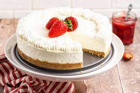

Cheesecake Recipe

This simple cheesecake can be a great addition to your own cookbook. It is very simple yet very rich in flavor. This recipe is enough to feed the entire family with a serving size of 16.
At only 30 minutes of prep time and an hour to cook this recipe can be a great last minute save to breing to any family event.
Ingredients
- 1 cup graham cracker crumbs
- ¼ cup finely chopped walnuts
- 3 tablespoons brown sugar
- 1 tablespoon ground cinnamon
- ½ teaspoon ground nutmeg
- 5 tablespoons butter, melted
- 5 tablespoons butter, melted
- 1 cup white sugar
- 1 cup sour cream
- 1 cup heavy cream
- 3 tablespoons all-purpose flour
- 1 tablespoon vanilla extract
- 3 eggs